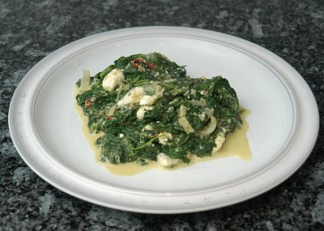

| Zutaten für 4 Personen: | |
| 200 g | fester Paneer |
| 4 El | Erdnuss oder Raps-öl |
| 800 g frischer oder 600 g tiefgekühlter | Blattspinat |
| 1 | Zwiebel |
| 2 | Knoblauchzehen |
| 3 cm | frischer Ingwer |
| 2 Kl | Korianderpulver |
| 2 Kl | Kreuzkümmelpulver |
| 1/2 Kl | Chilipulver |
| 1/4 Kl | Salz |
| 1/2 Kl | Zucker |
| 2 dl | Rahm |
Paneer trocknen lassen und in 1cm grosse Würfel schneiden.
Öl in einer Bratpfanne erhitzen und die Paneerwürfel bei mittlerer Hitze, rund herum kurz anbraten. Herausnehmen und beiseite stellen.
Den Spinat waschen und abtropfen lassen. Nach belieben klein schneiden. (Tiefgekühlten Spinat auftauen lassen und eventuell kleinschneiden.)
Die Zwiebel in Halbringe schneiden.
Den Knoblauch pressen.
Ingwer schälen und fein raffeln.
Zwiebel, Knoblauch, Ingwer und Gewürze in der Bratpfanne bei mittlerer Hitze anbraten.
Den gehackten Spinat dazugeben und zugedeckt 10 Minuten köcheln lassen.
Mit Salz und Zucker würzen und gut mischen.
Den Rahm und die Paneerwürfel dazugeben, zugedeckt 5 Minuten auf kleinster Stufe wärmen.
Patricia Krummenacher, Indischer Kochkurs, 2006
Ein schmackhaftes Gericht. (Statt Paneer habe ich irgend so einen Nahost-Käse in Salzlake aus dem Denner verwendet. Schmeckte vielleicht wie Feta. Durchaus gut.) RE 18.10.2010
@LINKBACK_TAG@ @WAKELOCK@